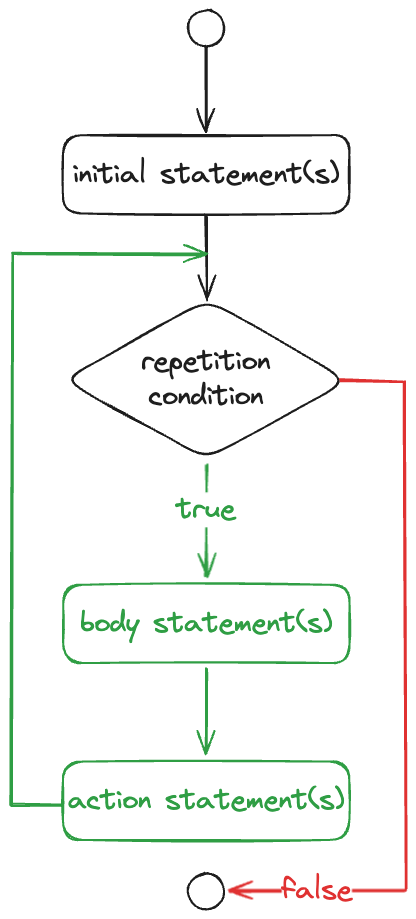

Repetisi For
Repetisi (repetition) merupakan proses melakukan sebuah perintah secara berulang sesuai dengan kondisi tertentu. Terdapat tiga cara dalam melakukan repetisi, yaitu for, while, dan do-while. Pada bagian ini akan dibahas mengenai seleksi for.
Repetisi for digunakan untuk mengulang suatu perintah secara terhitung. Disebut terhitung karena biasanya jumlah perulangan sudah diketahui atau dapat dihitung.
Note
Dalam implementasinya, repetisi for biasanya digunakan untuk memproses sebuah data yang sudah jelas, mengakses elemen dari sebuah array, dan tugas lainnya yang jelas jumlah perulangannya.
Berikut adalah flowchart dan syntax dari repetisi for.
{kind=link}
Repetisi For
for(<initial-statements>; <repetition-condition>; <action-statements>) {
<body-statements>
}
Berdasarkan flowchart dan syntax di atas, perintah awal (initial-statements) akan dijalankan untuk pertama kali saja. Setelah itu, program akan mengecek kondisi repetisi for (repetition-condition). Apabila kondisi tersebut sesuai, perintah yang ada di dalam scope repetisi for (body-statements) akan dijalankan, dilanjutkan dengan perintah aksi (action-statements). Terakhir, program akan mengecek ulang kembali kondisi repetisi for (repetition-condition) sampai kondisi tidak sesuai.
Berikut adalah contoh implementasi seleksi for.
public class Main {
public static void main(String[] args) {
for(int i = 0; i < 10; i++) {
System.out.printf("Iterasi ke-%d\n", i);
}
}
}
Iterasi ke-0
Iterasi ke-1
Iterasi ke-2
Iterasi ke-3
Iterasi ke-4
Iterasi ke-5
Iterasi ke-6
Iterasi ke-7
Iterasi ke-8
Iterasi ke-9
Pada kode di atas, program akan menjalankan perintah awal (initial-statements), yaitu menginisialisasikan variabel bernama i dengan nilai 0. Kemudian, program akan menjalankan pengecekan kondisi repetisi for (repetition-condition), yaitu mengecek variabel i apakah kurang dari 10. Karena kondisi tersebut terpenuhi, maka perintah yang ada di dalam scope (body-statements) akan dijalankan, yaitu output ke console. Setelah selesai, program akan menjalankan perintah aksi (action-statements), menambahkan nilai i sebanyak 1, sehingga nilai variabel i berubah menjadi 1. Hal ini terus dilakukan sampai variabel i bernilai 10, karena sudah tidak masuk ke dalam kondisi.